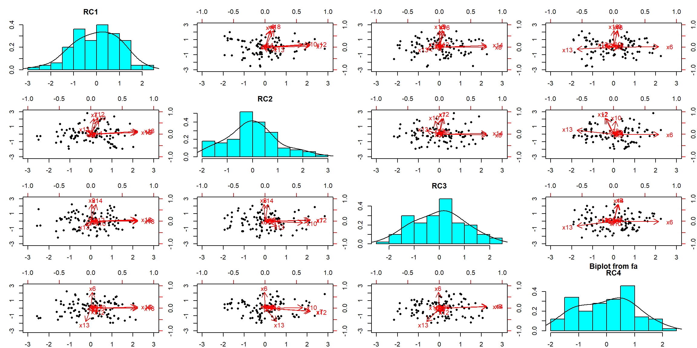
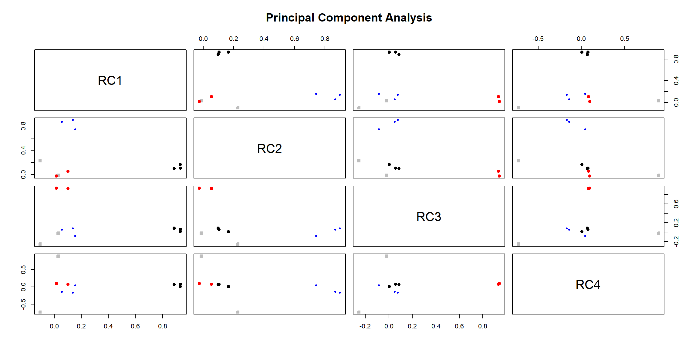
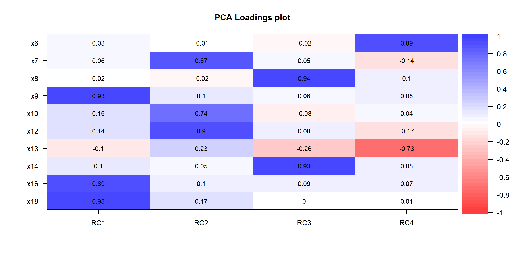
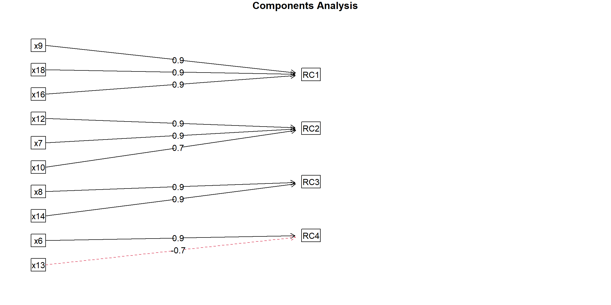

Parte 8 Análisis de componentes principales - Sesión 04
#sesion 04
hbat <- suppressMessages(read_spss("http://download.tesigandia.com/tmim/hbat.sav"))
data00 <- subset(hbat, select = c(x6, x7, x8, x9, x10, x11, x12, x13, x14, x15, x16, x17, x18))8.1 Análisis de correlación
Calculamos la correlación. Si algún valor está en el MSA está por debajo de 0.5 lo eliminamos (por orden y solo uno en cada paso) y volvemos a hacer la correlación y cálculo de Kaiser-Meyer-Olkin; solo así quedarán las mejores variables.
rcorr(as.matrix(data00), type = "pearson") x6 x7 x8 x9 x10 x11 x12 x13 x14 x15 x16 x17 x18
x6 1.00 -0.14 0.10 0.11 -0.05 0.48 -0.15 -0.40 0.09 0.03 0.10 -0.49 0.03
x7 -0.14 1.00 0.00 0.14 0.43 -0.05 0.79 0.23 0.05 -0.03 0.16 0.27 0.19
x8 0.10 0.00 1.00 0.10 -0.06 0.19 0.02 -0.27 0.80 -0.07 0.08 -0.19 0.03
x9 0.11 0.14 0.10 1.00 0.20 0.56 0.23 -0.13 0.14 0.06 0.76 0.39 0.87
x10 -0.05 0.43 -0.06 0.20 1.00 -0.01 0.54 0.13 0.01 0.08 0.18 0.33 0.28
x11 0.48 -0.05 0.19 0.56 -0.01 1.00 -0.06 -0.49 0.27 0.05 0.42 -0.38 0.60
x12 -0.15 0.79 0.02 0.23 0.54 -0.06 1.00 0.26 0.11 0.03 0.20 0.35 0.27
x13 -0.40 0.23 -0.27 -0.13 0.13 -0.49 0.26 1.00 -0.24 0.02 -0.11 0.47 -0.07
x14 0.09 0.05 0.80 0.14 0.01 0.27 0.11 -0.24 1.00 0.04 0.20 -0.17 0.11
x15 0.03 -0.03 -0.07 0.06 0.08 0.05 0.03 0.02 0.04 1.00 0.07 0.09 0.11
x16 0.10 0.16 0.08 0.76 0.18 0.42 0.20 -0.11 0.20 0.07 1.00 0.41 0.75
x17 -0.49 0.27 -0.19 0.39 0.33 -0.38 0.35 0.47 -0.17 0.09 0.41 1.00 0.50
x18 0.03 0.19 0.03 0.87 0.28 0.60 0.27 -0.07 0.11 0.11 0.75 0.50 1.00
n= 100
P
x6 x7 x8 x9 x10 x11 x12 x13 x14 x15 x16 x17 x18
x6 0.1736 0.3441 0.2922 0.5972 0.0000 0.1316 0.0000 0.3823 0.7898 0.3017 0.0000 0.7843
x7 0.1736 0.9932 0.1642 0.0000 0.6026 0.0000 0.0216 0.6081 0.7865 0.1208 0.0065 0.0561
x8 0.3441 0.9932 0.3387 0.5343 0.0549 0.8668 0.0064 0.0000 0.4669 0.4282 0.0638 0.8016
x9 0.2922 0.1642 0.3387 0.0496 0.0000 0.0215 0.2046 0.1635 0.5572 0.0000 0.0000 0.0000
x10 0.5972 0.0000 0.5343 0.0496 0.9092 0.0000 0.1831 0.9151 0.4051 0.0665 0.0007 0.0055
x11 0.0000 0.6026 0.0549 0.0000 0.9092 0.5445 0.0000 0.0060 0.6483 0.0000 0.0001 0.0000
x12 0.1316 0.0000 0.8668 0.0215 0.0000 0.5445 0.0078 0.2873 0.7547 0.0517 0.0003 0.0063
x13 0.0000 0.0216 0.0064 0.2046 0.1831 0.0000 0.0078 0.0140 0.8191 0.2564 0.0000 0.4712
x14 0.3823 0.6081 0.0000 0.1635 0.9151 0.0060 0.2873 0.0140 0.7281 0.0494 0.0904 0.2786
x15 0.7898 0.7865 0.4669 0.5572 0.4051 0.6483 0.7547 0.8191 0.7281 0.4980 0.3516 0.2950
x16 0.3017 0.1208 0.4282 0.0000 0.0665 0.0000 0.0517 0.2564 0.0494 0.4980 0.0000 0.0000
x17 0.0000 0.0065 0.0638 0.0000 0.0007 0.0001 0.0003 0.0000 0.0904 0.3516 0.0000 0.0000
x18 0.7843 0.0561 0.8016 0.0000 0.0055 0.0000 0.0063 0.4712 0.2786 0.2950 0.0000 0.0000 Calculamos Kaiser - Meyer - Olkin y MSA
KMO(data00)Kaiser-Meyer-Olkin factor adequacy
Call: KMO(r = data00)
Overall MSA = 0.61
MSA for each item =
x6 x7 x8 x9 x10 x11 x12 x13 x14 x15 x16 x17 x18
0.87 0.62 0.53 0.89 0.81 0.45 0.59 0.88 0.53 0.31 0.86 0.44 0.53 Quitamos X15, dado que su MSA es 0.31, y es el peor de todos los coeeficientes, estando por debajo de 0.5.
data01 <- subset(hbat, select = c(x6, x7, x8, x9, x10, x11, x12, x13, x14, x16, x17, x18))
rcorr(as.matrix(data01), type = "pearson") x6 x7 x8 x9 x10 x11 x12 x13 x14 x16 x17 x18
x6 1.00 -0.14 0.10 0.11 -0.05 0.48 -0.15 -0.40 0.09 0.10 -0.49 0.03
x7 -0.14 1.00 0.00 0.14 0.43 -0.05 0.79 0.23 0.05 0.16 0.27 0.19
x8 0.10 0.00 1.00 0.10 -0.06 0.19 0.02 -0.27 0.80 0.08 -0.19 0.03
x9 0.11 0.14 0.10 1.00 0.20 0.56 0.23 -0.13 0.14 0.76 0.39 0.87
x10 -0.05 0.43 -0.06 0.20 1.00 -0.01 0.54 0.13 0.01 0.18 0.33 0.28
x11 0.48 -0.05 0.19 0.56 -0.01 1.00 -0.06 -0.49 0.27 0.42 -0.38 0.60
x12 -0.15 0.79 0.02 0.23 0.54 -0.06 1.00 0.26 0.11 0.20 0.35 0.27
x13 -0.40 0.23 -0.27 -0.13 0.13 -0.49 0.26 1.00 -0.24 -0.11 0.47 -0.07
x14 0.09 0.05 0.80 0.14 0.01 0.27 0.11 -0.24 1.00 0.20 -0.17 0.11
x16 0.10 0.16 0.08 0.76 0.18 0.42 0.20 -0.11 0.20 1.00 0.41 0.75
x17 -0.49 0.27 -0.19 0.39 0.33 -0.38 0.35 0.47 -0.17 0.41 1.00 0.50
x18 0.03 0.19 0.03 0.87 0.28 0.60 0.27 -0.07 0.11 0.75 0.50 1.00
n= 100
P
x6 x7 x8 x9 x10 x11 x12 x13 x14 x16 x17 x18
x6 0.1736 0.3441 0.2922 0.5972 0.0000 0.1316 0.0000 0.3823 0.3017 0.0000 0.7843
x7 0.1736 0.9932 0.1642 0.0000 0.6026 0.0000 0.0216 0.6081 0.1208 0.0065 0.0561
x8 0.3441 0.9932 0.3387 0.5343 0.0549 0.8668 0.0064 0.0000 0.4282 0.0638 0.8016
x9 0.2922 0.1642 0.3387 0.0496 0.0000 0.0215 0.2046 0.1635 0.0000 0.0000 0.0000
x10 0.5972 0.0000 0.5343 0.0496 0.9092 0.0000 0.1831 0.9151 0.0665 0.0007 0.0055
x11 0.0000 0.6026 0.0549 0.0000 0.9092 0.5445 0.0000 0.0060 0.0000 0.0001 0.0000
x12 0.1316 0.0000 0.8668 0.0215 0.0000 0.5445 0.0078 0.2873 0.0517 0.0003 0.0063
x13 0.0000 0.0216 0.0064 0.2046 0.1831 0.0000 0.0078 0.0140 0.2564 0.0000 0.4712
x14 0.3823 0.6081 0.0000 0.1635 0.9151 0.0060 0.2873 0.0140 0.0494 0.0904 0.2786
x16 0.3017 0.1208 0.4282 0.0000 0.0665 0.0000 0.0517 0.2564 0.0494 0.0000 0.0000
x17 0.0000 0.0065 0.0638 0.0000 0.0007 0.0001 0.0003 0.0000 0.0904 0.0000 0.0000
x18 0.7843 0.0561 0.8016 0.0000 0.0055 0.0000 0.0063 0.4712 0.2786 0.0000 0.0000 Calculamos Kaiser - Meyer - Olkin y MSA
KMO(data01)Kaiser-Meyer-Olkin factor adequacy
Call: KMO(r = data01)
Overall MSA = 0.61
MSA for each item =
x6 x7 x8 x9 x10 x11 x12 x13 x14 x16 x17 x18
0.88 0.62 0.53 0.89 0.80 0.45 0.59 0.88 0.53 0.86 0.44 0.53 Quitamos X17, dado que su MSA es 0.44, y es el peor de todos los coeeficientes, estando por debajo de 0.5.
data02 <- subset(hbat, select = c(x6, x7, x8, x9, x10, x11, x12, x13, x14, x16, x18))
rcorr(as.matrix(data02), type = "pearson") x6 x7 x8 x9 x10 x11 x12 x13 x14 x16 x18
x6 1.00 -0.14 0.10 0.11 -0.05 0.48 -0.15 -0.40 0.09 0.10 0.03
x7 -0.14 1.00 0.00 0.14 0.43 -0.05 0.79 0.23 0.05 0.16 0.19
x8 0.10 0.00 1.00 0.10 -0.06 0.19 0.02 -0.27 0.80 0.08 0.03
x9 0.11 0.14 0.10 1.00 0.20 0.56 0.23 -0.13 0.14 0.76 0.87
x10 -0.05 0.43 -0.06 0.20 1.00 -0.01 0.54 0.13 0.01 0.18 0.28
x11 0.48 -0.05 0.19 0.56 -0.01 1.00 -0.06 -0.49 0.27 0.42 0.60
x12 -0.15 0.79 0.02 0.23 0.54 -0.06 1.00 0.26 0.11 0.20 0.27
x13 -0.40 0.23 -0.27 -0.13 0.13 -0.49 0.26 1.00 -0.24 -0.11 -0.07
x14 0.09 0.05 0.80 0.14 0.01 0.27 0.11 -0.24 1.00 0.20 0.11
x16 0.10 0.16 0.08 0.76 0.18 0.42 0.20 -0.11 0.20 1.00 0.75
x18 0.03 0.19 0.03 0.87 0.28 0.60 0.27 -0.07 0.11 0.75 1.00
n= 100
P
x6 x7 x8 x9 x10 x11 x12 x13 x14 x16 x18
x6 0.1736 0.3441 0.2922 0.5972 0.0000 0.1316 0.0000 0.3823 0.3017 0.7843
x7 0.1736 0.9932 0.1642 0.0000 0.6026 0.0000 0.0216 0.6081 0.1208 0.0561
x8 0.3441 0.9932 0.3387 0.5343 0.0549 0.8668 0.0064 0.0000 0.4282 0.8016
x9 0.2922 0.1642 0.3387 0.0496 0.0000 0.0215 0.2046 0.1635 0.0000 0.0000
x10 0.5972 0.0000 0.5343 0.0496 0.9092 0.0000 0.1831 0.9151 0.0665 0.0055
x11 0.0000 0.6026 0.0549 0.0000 0.9092 0.5445 0.0000 0.0060 0.0000 0.0000
x12 0.1316 0.0000 0.8668 0.0215 0.0000 0.5445 0.0078 0.2873 0.0517 0.0063
x13 0.0000 0.0216 0.0064 0.2046 0.1831 0.0000 0.0078 0.0140 0.2564 0.4712
x14 0.3823 0.6081 0.0000 0.1635 0.9151 0.0060 0.2873 0.0140 0.0494 0.2786
x16 0.3017 0.1208 0.4282 0.0000 0.0665 0.0000 0.0517 0.2564 0.0494 0.0000
x18 0.7843 0.0561 0.8016 0.0000 0.0055 0.0000 0.0063 0.4712 0.2786 0.0000 Calculamos Kaiser - Meyer - Olkin y MSA
KMO(data02)Kaiser-Meyer-Olkin factor adequacy
Call: KMO(r = data02)
Overall MSA = 0.65
MSA for each item =
x6 x7 x8 x9 x10 x11 x12 x13 x14 x16 x18
0.51 0.63 0.52 0.79 0.78 0.62 0.62 0.75 0.51 0.76 0.67 X11 que tenía un MSA de 0.45 y era candidato, ahora supera el 0.5 de MSA. Decidimos seguir con los siguientes pasos. Calculamos el test de esfericidad de Bartlett, donde la Ho es la igualdad de la matriz de correlaciones a la matriz identidad, es decir la ausencia de correlación entre las variables que conforman la estructura a analizar.
Analizamos el test de esfericidad de Bartlett.
8.2 Test de esfericidad de Bartlett
bartlett.test(data02)
Bartlett test of homogeneity of variances
data: data02
Bartlett's K-squared = 146.4, df = 10, p-value < 2.2e-16Dado que es correcto y rechazamos la hipótesis nula, continuamos con el análisis de componentes.
8.3 Análisis de componentes principales
output <- principal(data02, nfactors=4, rotate="varimax")
outputPrincipal Components Analysis
Call: principal(r = data02, nfactors = 4, rotate = "varimax")
Standardized loadings (pattern matrix) based upon correlation matrix
RC1 RC2 RC3 RC4 h2 u2 com
x6 0.00 -0.01 -0.03 0.88 0.77 0.232 1.0
x7 0.06 0.87 0.05 -0.12 0.78 0.223 1.1
x8 0.02 -0.02 0.94 0.10 0.89 0.107 1.0
x9 0.93 0.12 0.05 0.09 0.88 0.119 1.1
x10 0.14 0.74 -0.08 0.01 0.58 0.424 1.1
x11 0.59 -0.06 0.15 0.64 0.79 0.213 2.1
x12 0.13 0.90 0.08 -0.16 0.86 0.141 1.1
x13 -0.09 0.23 -0.25 -0.72 0.64 0.359 1.5
x14 0.11 0.05 0.93 0.10 0.89 0.108 1.1
x16 0.86 0.11 0.08 0.04 0.77 0.234 1.1
x18 0.94 0.18 0.00 0.05 0.91 0.086 1.1
RC1 RC2 RC3 RC4
SS loadings 2.89 2.23 1.86 1.77
Proportion Var 0.26 0.20 0.17 0.16
Cumulative Var 0.26 0.47 0.63 0.80
Proportion Explained 0.33 0.26 0.21 0.20
Cumulative Proportion 0.33 0.59 0.80 1.00
Mean item complexity = 1.2
Test of the hypothesis that 4 components are sufficient.
The root mean square of the residuals (RMSR) is 0.06
with the empirical chi square 39.02 with prob < 0.0018
Fit based upon off diagonal values = 0.97Analizamos las comunalidades continuando con la adecuación de los datos al análisis, vemos que tenemos que eliminar X11pues mantiene cargas cruzadas superiores a 0.5 en dos componentes (0.59 en RC1 y 0.64 en RC4). Eliminamos esa variable del set de datos, y volvemos a lanzar las pruebas preliminares al análisis de componentes principales.
data03 <- subset(hbat, select = c(x6, x7, x8, x9, x10, x12, x13, x14, x16, x18))
rcorr(as.matrix(data03), type = "pearson") x6 x7 x8 x9 x10 x12 x13 x14 x16 x18
x6 1.00 -0.14 0.10 0.11 -0.05 -0.15 -0.40 0.09 0.10 0.03
x7 -0.14 1.00 0.00 0.14 0.43 0.79 0.23 0.05 0.16 0.19
x8 0.10 0.00 1.00 0.10 -0.06 0.02 -0.27 0.80 0.08 0.03
x9 0.11 0.14 0.10 1.00 0.20 0.23 -0.13 0.14 0.76 0.87
x10 -0.05 0.43 -0.06 0.20 1.00 0.54 0.13 0.01 0.18 0.28
x12 -0.15 0.79 0.02 0.23 0.54 1.00 0.26 0.11 0.20 0.27
x13 -0.40 0.23 -0.27 -0.13 0.13 0.26 1.00 -0.24 -0.11 -0.07
x14 0.09 0.05 0.80 0.14 0.01 0.11 -0.24 1.00 0.20 0.11
x16 0.10 0.16 0.08 0.76 0.18 0.20 -0.11 0.20 1.00 0.75
x18 0.03 0.19 0.03 0.87 0.28 0.27 -0.07 0.11 0.75 1.00
n= 100
P
x6 x7 x8 x9 x10 x12 x13 x14 x16 x18
x6 0.1736 0.3441 0.2922 0.5972 0.1316 0.0000 0.3823 0.3017 0.7843
x7 0.1736 0.9932 0.1642 0.0000 0.0000 0.0216 0.6081 0.1208 0.0561
x8 0.3441 0.9932 0.3387 0.5343 0.8668 0.0064 0.0000 0.4282 0.8016
x9 0.2922 0.1642 0.3387 0.0496 0.0215 0.2046 0.1635 0.0000 0.0000
x10 0.5972 0.0000 0.5343 0.0496 0.0000 0.1831 0.9151 0.0665 0.0055
x12 0.1316 0.0000 0.8668 0.0215 0.0000 0.0078 0.2873 0.0517 0.0063
x13 0.0000 0.0216 0.0064 0.2046 0.1831 0.0078 0.0140 0.2564 0.4712
x14 0.3823 0.6081 0.0000 0.1635 0.9151 0.2873 0.0140 0.0494 0.2786
x16 0.3017 0.1208 0.4282 0.0000 0.0665 0.0517 0.2564 0.0494 0.0000
x18 0.7843 0.0561 0.8016 0.0000 0.0055 0.0063 0.4712 0.2786 0.0000 Analizamos Kaiser - Meyer - Olkin y MSA
KMO(data03)Kaiser-Meyer-Olkin factor adequacy
Call: KMO(r = data03)
Overall MSA = 0.67
MSA for each item =
x6 x7 x8 x9 x10 x12 x13 x14 x16 x18
0.61 0.64 0.52 0.69 0.81 0.63 0.74 0.53 0.83 0.72 Consiguiendo de nuevo valores válidos en este caso para continuar con el proceso, donde volvemos a recalcular Bartlett.
bartlett.test(data03)
Bartlett test of homogeneity of variances
data: data03
Bartlett's K-squared = 142.71, df = 9, p-value < 2.2e-16Es óptimo y analizamos el resultado de componentes …
KMO(data03)Kaiser-Meyer-Olkin factor adequacy
Call: KMO(r = data03)
Overall MSA = 0.67
MSA for each item =
x6 x7 x8 x9 x10 x12 x13 x14 x16 x18
0.61 0.64 0.52 0.69 0.81 0.63 0.74 0.53 0.83 0.72 8.4 Resumen de resultados
8.4.1 Rotación Varimax (ACP, psych)
output <- principal(data03, nfactors=4, rotate="varimax")
outputPrincipal Components Analysis
Call: principal(r = data03, nfactors = 4, rotate = "varimax")
Standardized loadings (pattern matrix) based upon correlation matrix
RC1 RC2 RC3 RC4 h2 u2 com
x6 0.03 -0.01 -0.02 0.89 0.80 0.20 1.0
x7 0.06 0.87 0.05 -0.14 0.78 0.22 1.1
x8 0.02 -0.02 0.94 0.10 0.89 0.11 1.0
x9 0.93 0.10 0.06 0.08 0.89 0.11 1.0
x10 0.16 0.74 -0.08 0.04 0.58 0.42 1.1
x12 0.14 0.90 0.08 -0.17 0.86 0.14 1.1
x13 -0.10 0.23 -0.26 -0.73 0.66 0.34 1.5
x14 0.10 0.05 0.93 0.08 0.89 0.11 1.0
x16 0.89 0.10 0.09 0.07 0.81 0.19 1.1
x18 0.93 0.17 0.00 0.01 0.89 0.11 1.1
RC1 RC2 RC3 RC4
SS loadings 2.59 2.22 1.85 1.41
Proportion Var 0.26 0.22 0.18 0.14
Cumulative Var 0.26 0.48 0.67 0.81
Proportion Explained 0.32 0.28 0.23 0.17
Cumulative Proportion 0.32 0.60 0.83 1.00
Mean item complexity = 1.1
Test of the hypothesis that 4 components are sufficient.
The root mean square of the residuals (RMSR) is 0.06
with the empirical chi square 35.71 with prob < 0.00019
Fit based upon off diagonal values = 0.96La salida de la función print.psych muestra las cargas de los componentes (de la matriz del modelo), la h2 (comunalidades) la u2 (las singularidades [1-h2]) y la complejidad de las cargas de los componentes para esa variable (índice de Hoffman)
8.5 Gráficos del análisis
biplot.psych(output)
plot(output)
cor.plot(output, numbers=TRUE)
fa.diagram(output)